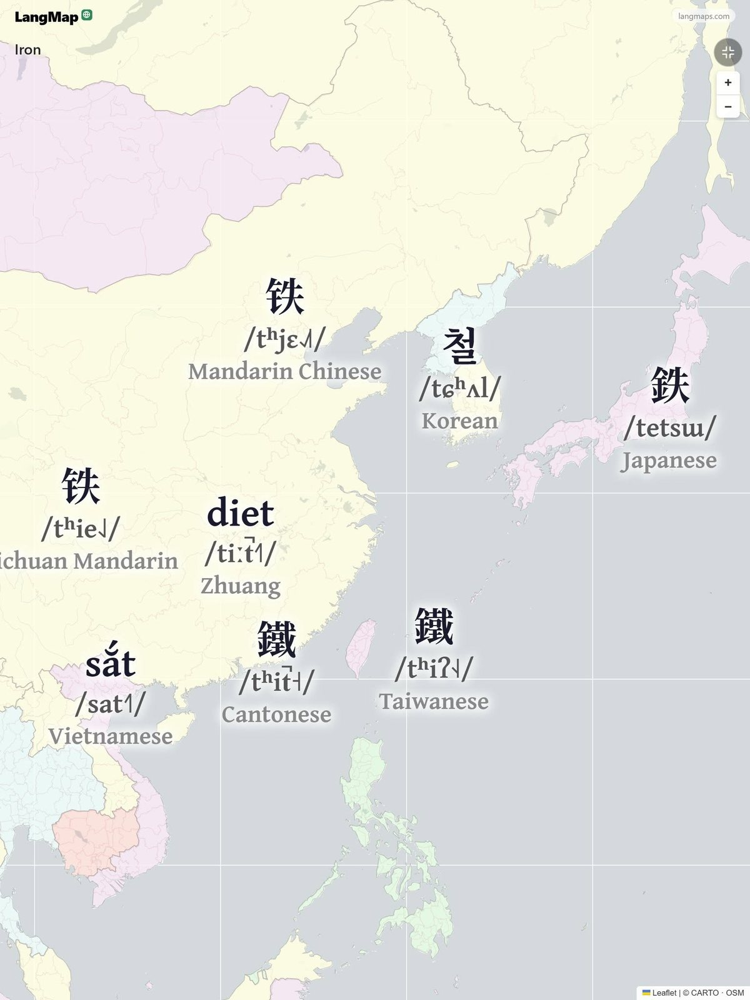

Sinosphere · · revised · Facebook post
Not Just Traditional and Simplified: Three Standards for One Character
- Chinese characters did not split into just "traditional" and "simplified."
- Mainland China and Japan simplified them separately, while Taiwan and Hong Kong largely kept traditional forms.
- That is why one historical character can now have three different modern shapes, like 鐵, 铁 and 鉄.

Contents
Three shapes for "iron"
Look at the word for "iron" on the map at the top of this article.
Taiwan / Hong Kong: 鐵
Mainland China: 铁
Japan: 鉄
One historical character. Three modern shapes.
Chinese characters did not split into just "traditional" and "simplified."
Two separate reforms
Mainland China standardized simplified characters mainly in the 1950s and 1960s.
Taiwan, Hong Kong and Macau continued using traditional forms.
Japan reformed its characters too, but separately. Its new standard shapes are called 新字体 shinjitai, "new character forms," and they arrived in the years after the Second World War, a few years before the mainland reform.
Korea, where Hanja are still taught and used alongside hangul, kept the traditional shapes. On the iron map, Korean writes the word in hangul, 철 cheol, but its Hanja is 鐵.
That is why the result is not simply "traditional vs simplified."
Sometimes only China simplified
Take 電 "electricity."
Taiwan / Hong Kong: 電
Mainland China: 电
Japan: 電
China simplified it.
Japan did not.
The Word Map for "computer" shows the result in everyday vocabulary: Taiwan and Hong Kong write 電腦, the mainland writes 电脑. Japan sidesteps the question entirely with the loanword コンピューター konpyūtā.
Sometimes they agree
Now look at 學 "study."
Taiwan / Hong Kong: 學
Mainland China: 学
Japan: 学
This time China and Japan ended up with the same simplified shape.
So why do China and Japan sometimes agree?
Because many simplified shapes were not invented from scratch in the twentieth century.
Abbreviated and variant forms had already existed for centuries in handwriting and printing. China and Japan sometimes chose the same old shortcut as the new standard.
Other times, they chose differently.
Sometimes all three differ
And then there are characters where all three tell different stories.
龍 "dragon"
Taiwan / Hong Kong: 龍
Mainland China: 龙
Japan: 竜
"Iron" is the same kind of case, and it shows how close the two reforms could come without meeting. Both China and Japan replaced the complicated right-hand part of 鐵 with the much simpler 失. But the mainland reform also simplified the metal radical on the left, 金, to 钅, so the result is 铁. Japan kept the full 金 and wrote 鉄.
Same shortcut. Different radical. Two new standards.
Three answers
So today one historical character can have three familiar modern forms:
Traditional Chinese
Simplified Chinese
Japanese shinjitai (新字体)
A reader who knows only one of them can usually still guess the others. But anyone who has typed Chinese and Japanese on the same keyboard knows they are not interchangeable: 鉄 and 铁 are different characters to a computer.
Same writing tradition.
Three separate standards.
Three answers.